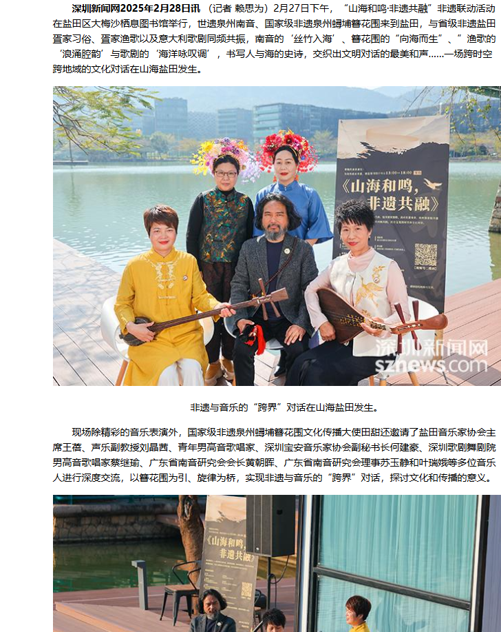
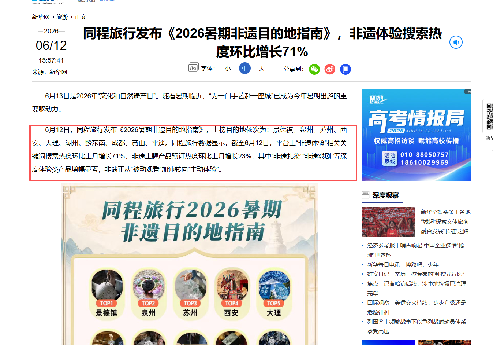
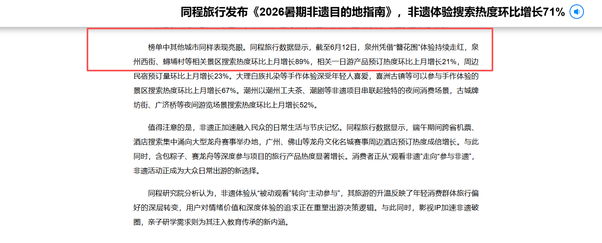
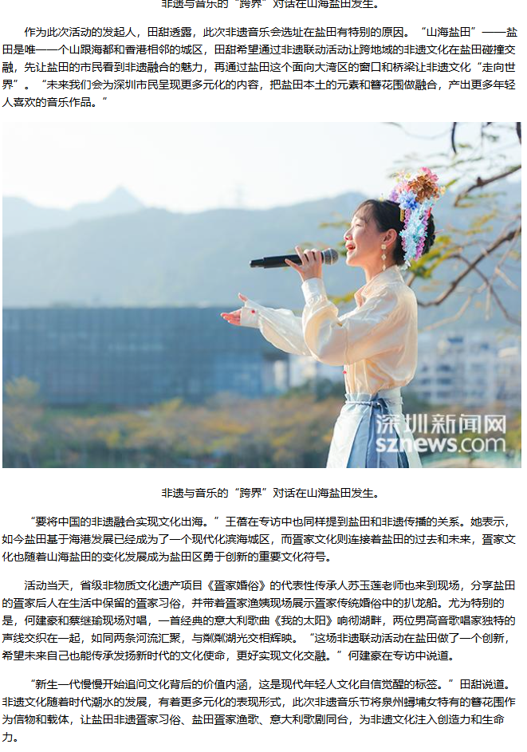
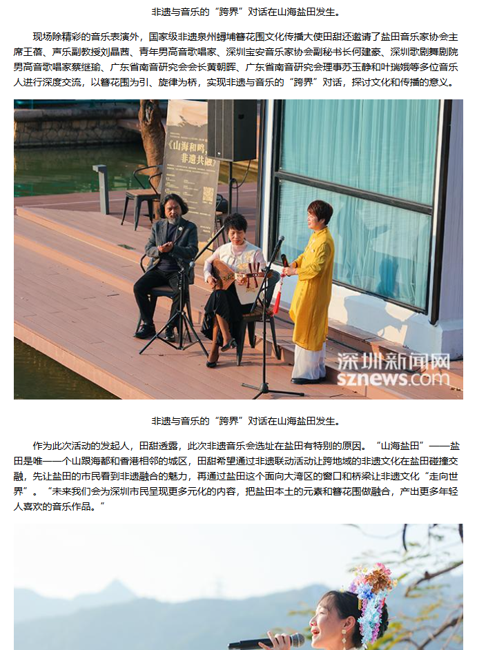
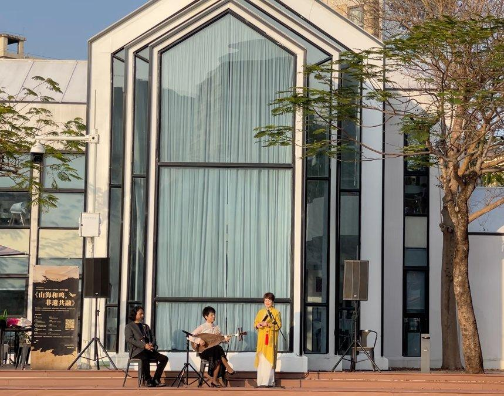
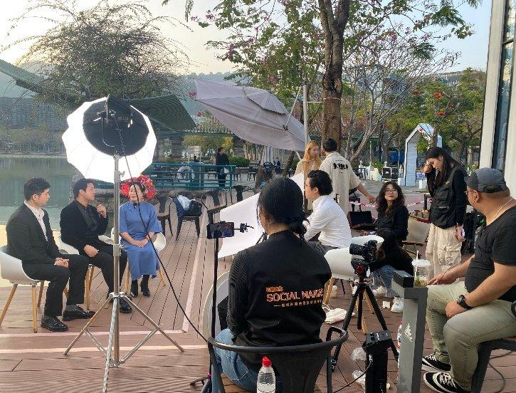
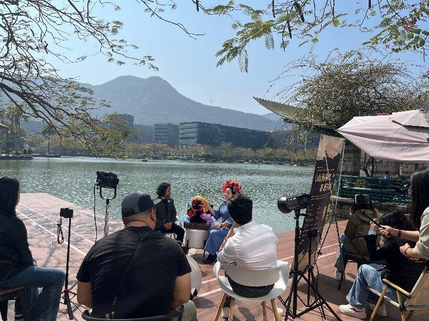

深圳盐田"海丝回响"城市快闪案例

项目背景
2026年同程旅行发布的《暑期非遗目的地指南》显示，"非遗体验"关键词搜索热度环比增长71%，"为一门手艺赴一座城"成为暑期出游的重要驱动力。

非遗体验热度上升，为城市文旅带来了新的传播机会。
但当越来越多城市都开始讲非遗，传播的关键也从"展示本地有什么"，进一步转向"如何把非遗放进更大的城市叙事中"。
如果只是把本地非遗项目并列呈现，容易形成活动热闹但记忆点不足的问题。观众看到了表演，却不一定理解这座城市与这些文化符号之间的关系。
深圳盐田"海丝回响"城市快闪，正是在这一背景下进行的一次城市文旅策划实践。
项目以深圳盐田湖边公共空间为活动场景，以"海上丝绸之路"为跨区域文化母题，将泉州簪花围、南音，盐田疍家渔歌，以及意大利歌剧纳入同一叙事结构，形成一场发生在深圳盐田湖边的文明对话。

核心挑战
第一，如何避免非遗内容变成简单堆砌。
南音、簪花围、疍家渔歌、意大利歌剧，分别来自不同地域、不同艺术形式和不同文化语境。如果只是并列呈现，很容易变成一场"非遗联欢式"活动，缺少统一叙事。
第二，如何让深圳盐田在非遗传播中拥有清晰位置。
盐田不是传统意义上的古城型文旅目的地。如果只从"本地有什么"出发，项目很难形成足够开阔的文化解释空间。
第三，如何在小预算条件下形成高感知传播效果。
项目没有新建剧院，没有复杂搭建，整体预算不到1万元，核心视觉装置只是一块45元KT板。如何把一个普通户外公共空间转化为可传播的文化现场，是落地阶段的重要问题。
策略思路
1. 用"海上丝绸之路"替代属地资源罗列
凡奇社媒没有把策划起点放在"盐田本地有什么"，而是先锚定"海上丝绸之路"这一跨区域公共母题。
在这一母题下：
- 泉州是海丝起点。
- 深圳盐田是当代大湾区面向海洋与世界的节点。
- 大湾区是今天重要的出海口。
- 意大利歌剧则对应海丝另一端的文明回响。
通过这一文化坐标，深圳盐田不再只是活动发生地，而成为海丝当代表达中的节点城市。

2. 用符号策展建立内容关系
项目没有将非遗和艺术内容简单放在一起，而是为每个符号设置叙事功能：
| 符号 | 文化来源 | 叙事功能 |
|---|---|---|
| 南音 | 泉州 | 海丝起点的千年原声 |
| 簪花围 | 泉州 | 起点的视觉印记与视觉锚点 |
| 疍家渔歌 | 深圳盐田 | 节点城市的在地回声 |
| 意大利歌剧 | 海丝另一端文明 | 远方艺术回响 |
在这个结构中，南音不是单独的传统音乐展示，簪花围不是单纯的热门视觉符号，疍家渔歌也不只是本地非遗补充，意大利歌剧更不是简单的国际化包装。
它们共同服务于"海丝回响"这一主题：起点与节点重逢，本土与世界对话，传统非遗进入当代城市公共空间。
3. 用城市快闪打通高雅艺术与日常生活
项目没有采用固定舞台和售票演出的逻辑，而是选择深圳盐田大梅沙海图图书馆旁的公共临湖步道。
这个空间本身是市民日常散步、跑步、经过、看湖的地方。活动以快闪方式介入，让市民在日常路径中偶遇一场文化表演。
这种形式降低了高雅艺术与公众相遇的门槛，也让城市公共空间成为传播的一部分。

视频表达与现场呈现
本项目的传播效果并不只来自场地选择，也来自前期策划中对视频媒体表达的介入。
凡奇社媒从一开始就将活动视为一条可传播的视频内容来设计，而不是活动结束后再做记录。
在执行中，团队围绕以下要素进行现场组织：
- 演员站位与湖面、建筑、水岸的关系。
- 镜头取景如何避开杂乱背景。
- 山体、水面、建筑线条与人物服饰如何形成画面层次。
- 簪花围如何作为视觉锚点被观众快速识别。
- 南音、疍家渔歌和意大利歌剧如何在视频节奏中形成对话感。
通过选景、现场调度、镜头取景和后期视频表达，原本朴实无华的户外空地，被重新组织成一个有山、有水、有城市风景的文化舞台。
因此，项目呈现出的"大片感"并不只来自自然场地，而是来自"策划前置的视频化表达"。


落地成果
项目最终形成了兼具现场体验与传播价值的城市快闪内容。
主要成果包括：
- 活动视频全网播放量破百万。
- 市民自发讨论与打卡，湖边步道形成临时文化关注点。
- 获深圳新闻网等主流媒体报道。
- 一个普通城市公共空间，被重新定义为"流动文化地标"。
更重要的是，深圳盐田通过这场活动获得了一个新的文化表达角度：它不仅是山海城区和港口节点，也可以在"海上丝绸之路"的母题中，成为连接传统与当代、本土与世界的节点城市。

方法论沉淀
本项目沉淀出凡奇社媒在小预算城市文旅项目中的四个关键方法：
第一，用文化母题替代属地罗列。
城市文旅不应只回答"这里有什么"，更要回答"这里在更大的文化坐标中处于什么位置"。
第二，用符号策展替代非遗堆砌。
不是把多个非遗和艺术节目放在一起，而是建立它们之间的叙事关系。
第三，用公共空间替代封闭场馆。
高雅艺术不一定只在剧场发生，也可以进入市民日常路径，通过偶遇形成更自然的城市触达。
第四，用视频表达放大现场价值。
通过镜头选择、景别控制、人物调度和画面构图，让现场成为可观看、可传播、可沉淀的内容资产。
项目价值
深圳盐田"海丝回响"并不是一次单纯的低成本快闪。
它是一次区域公共IP的雏形搭建：通过"海上丝绸之路"这一跨区域母题，把泉州起点、深圳盐田节点、大湾区出海口，以及海丝另一端的文明回响串联起来。
凡奇社媒交付的，也不只是一次活动执行，而是一套让深圳盐田被看见、被理解、被再次提起的叙事框架。
← 返回案例列表凡奇社媒不仅能做本土非遗的影像化，更擅长跨区域文化IP的策展与嫁接，帮助城市和品牌跳出"本地特产"的局限，站在更大的文化母题里，成为区域公共IP的一部分。